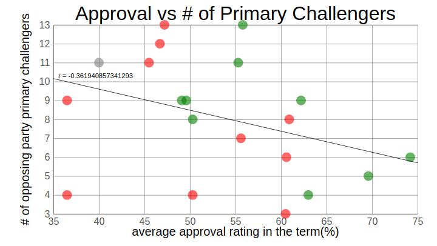
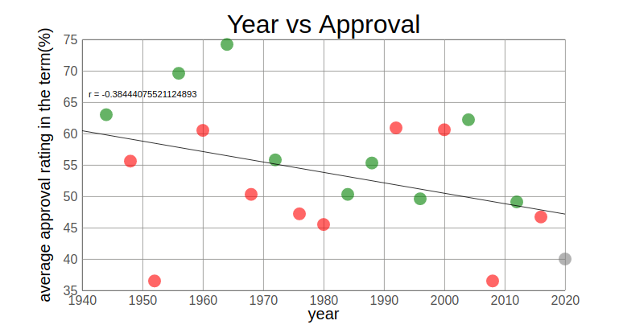

As an exercise in creating interactive graphs I am investigating any possible correlation between primary challengers and the popularity of the incumbent
At the beginning of the 2020 Democratic primaries, Mark Schmitt, in an article at Vox, put forward a number of theories as to why there were so many individuals running to be the nominee. These theories included:
* A lack of a democratic incumbent
* A lack of a 'next-in-line Democrat'
* A surge in 'dollars and donors'
* An inability for minority Senators to make a significant impactand * ‘a solid, though not certain, chance of Democratic victory’
This last point in my list was one of the first that Mark brought up in his article. I put it last because it is the one that got me to pause. It sounds like a hypothesis that we can actually investigate: is there a correlation between an incumbent or sitting president’s popularity and the number of individuals running for the opposing party’s nomination?
Additionally, I am currently learning how to make interactive graphs for a separate, work-related project and I figured this was a good quick project where I could start.
First, I had to collect the data, all of which came from Wikipedia or Gallup. I have been working on other, larger, projects where I do some scraping in JavaScript, but I felt like for this it would just be faster to copy the values in myself. Each primary has its own wikipedia page and the data I want is sometimes buried in the text, so it was easier/more time efficient to just copy it in.
The wikipedia page on presidential approval ratings dates back to FDR, so that is as far back as this dataset will go. Initially, I am only using their term averages from Gallup (except for FDR and DJT, both taken from the wikipedia page), but I hope to someday revisit this project and add some functionality to look at factors beyond the approval stats and see how they correlate to primary challenger numbers.
Using this information I made an exportable data array in data.js. The array contained the year, the president, that president’s term, that president’s approval rating, the number of challengers in the opposition party’s primary (that did not withdraw before the primaries), the names of those potential nominees and finally a partyWin metric to keep track of whether or not the sitting President’s party won the next election. Then I imported that array into my primary javascript file for working with svg elements on my html page to develop the webpage itself. However, to avoid import/export issues between modules, I used rollup to concatenate all js files into one bundled file (bundle.js) and then sourced the bundled file instead of the main js file. This helped me to monitor my work as I went without loading to a local server every time. The graphs themselves were built using d3.js and include some interactivity, including hover animations and printing some basic information to a second svg box upon clicking on the datapoints themselves. All of the code for this project can be found in my ‘primaries’ github repository. For anyone interested in my methodology, the js files have comments throughout that can guide you. The interactive versions of the graphs can be found here.
Obviously, this analysis is very flawed in a number of ways. First, the approval rating is an average of the entire term and does not reflect potential lows at the end of a term, like in Harry S. Truman’s 2nd term. Second, I am certain that the factors Matt outlined in his initial article all play a role in the number of primary nominees. I am not looking to over-interpret these results, nor was this an exercise in trying to predict the number of Presidential Primary nominees based on the sitting President’s popularity. Obviously, with an r value of -0.36 (fig. 1), the correlation is very weak anyway, so this data is likely not indicative of much. In fact, looking at approval over time in the graph at the bottom of the page, we see an ever-so-slightly greater correlation between year and approval (having recently read Ezra Klein’s Why We’re Polarized, I did not find this shocking; fig. 2). This finding also lends credence to some of Matt’s other theories that have also changed with time (e.g. money, decreasing impact of minority senators). Finally, while I am highlighting the outcome of each election, for or against the sitting President’s party, I am not trying to predict that either (though if you wanted to you would see in my figure that no President’s party has won the next election with a favorability rating as low as Donald Trump’s currently is). This was, first and foremost, meant to be an exercise in developing an interactive graph, doing some ML-related mathematics in javascript and this idea had been lingering for some time as a quick and easy analysis. I’m publishing it not as a statement on the accuracy of Matt’s assessment, but simply as a self-assessment on my continuing advancement in data science and software development. I still have a ways to go.
 
{kind=link}